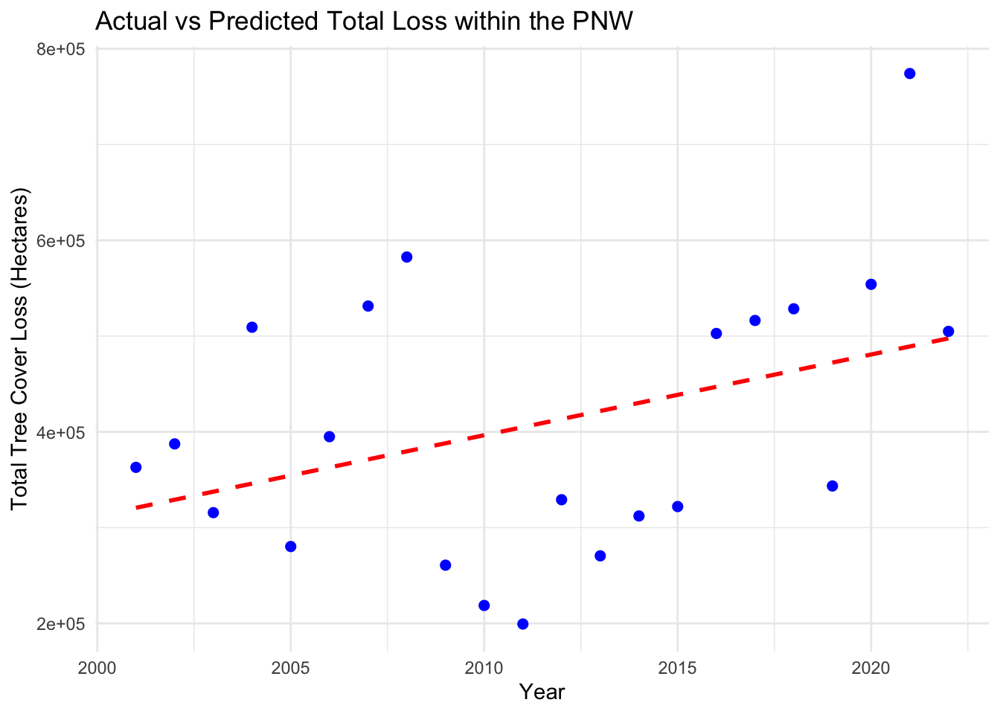

library(readr)
library(dplyr)##
## Attaching package: 'dplyr'## The following objects are masked from 'package:stats':
##
## filter, lag## The following objects are masked from 'package:base':
##
## intersect, setdiff, setequal, unionlibrary(ggplot2)
library(tidyr)
library(stringr)
ccd_data <- read_csv("/Users/jessebrodrick/Desktop/490Pro/data/GlblFW/CCD.csv")## Rows: 25184 Columns: 32## ── Column specification ───────────────────────────────────
## Delimiter: ","
## chr (3): country, subnational1, subnational2
## dbl (29): umd_tree_cover_density_2000__threshold, umd_tree_cover_extent_2000__ha, gfw_aboveground_car...
##
## ℹ Use `spec()` to retrieve the full column specification for this data.
## ℹ Specify the column types or set `show_col_types = FALSE` to quiet this message.# Filter for a threshold of 50 and western states
western_states <- c("Washington", "Oregon", "California", "Idaho",
"Montana", "Nevada")
ccd_subset <- ccd_data %>%
filter(subnational1 %in% western_states, umd_tree_cover_density_2000__threshold == 50)
### Identify the emission columns
emission_columns <- names(ccd_subset)[grepl("gfw_forest_carbon_gross_emissions_", names(ccd_subset))]
### Pivot the data to long format,
ccd_long <- ccd_subset %>%
pivot_longer(
cols = all_of(emission_columns),
names_to = "Year_Emission",
values_to = "Emissions"
)
### Extract the year from 'Year_Emission' column
ccd_long <- ccd_long %>%
mutate(Year = str_extract(Year_Emission, "\\d{4}")) %>%
select(-Year_Emission) %>%
mutate(Year = as.numeric(Year))
### Check to ensure no NAs in Year column
print(sum(is.na(ccd_long$Year)))## [1] 250### Aggregate sum of by year
annual_emissions <- ccd_long %>%
group_by(Year) %>%
summarise(Total_Emissions = sum(Emissions, na.rm = TRUE))
### linear regression analysis
model <- lm(Total_Emissions ~ Year, data = annual_emissions)
summary(model)##
## Call:
## lm(formula = Total_Emissions ~ Year, data = annual_emissions)
##
## Residuals:
## Min 1Q Median 3Q Max
## -87306291 -49769490 -842927 25771932 148385954
##
## Coefficients:
## Estimate Std. Error t value Pr(>|t|)
## (Intercept) -1.378e+10 4.307e+09 -3.199 0.00451 **
## Year 6.972e+06 2.141e+06 3.256 0.00396 **
## ---
## Signif. codes: 0 '***' 0.001 '**' 0.01 '*' 0.05 '.' 0.1 ' ' 1
##
## Residual standard error: 63720000 on 20 degrees of freedom
## (1 observation deleted due to missingness)
## Multiple R-squared: 0.3464, Adjusted R-squared: 0.3137
## F-statistic: 10.6 on 1 and 20 DF, p-value: 0.003958# Predict using the model
annual_emissions$Predicted_Emissions <- predict(model, newdata = annual_emissions)
# Plot the actual vs predicted emissions
ggplot(annual_emissions, aes(x = Year, y = Total_Emissions)) +
geom_line(aes(y = Predicted_Emissions), color = "red", linetype = "dashed", linewidth = 1) +
geom_point(aes(y = Total_Emissions), color = "blue", size = 2) +
labs(x = "Year", y = "Total Emissions (Mg CO2e)", title = "Actual vs Predicted Total Emissions within the PNW") +
theme_minimal()## Warning: Removed 1 row containing missing values (`geom_line()`).## Warning: Removed 1 rows containing missing values (`geom_point()`).# PNW Tree Cover Loss time series regression
TCL_data <- read_csv("/Users/jessebrodrick/Desktop/490Pro/data/GlblFW/CTCL1.csv")## Rows: 25184 Columns: 30
## ── Column specification ───────────────────────────────────
## Delimiter: ","
## chr (3): country, subnational1, subnational2
## dbl (27): threshold, area_ha, extent_2000_ha, extent_2010_ha, gain_2000_2020_ha, tc_loss_ha_2001, tc_...
##
## ℹ Use `spec()` to retrieve the full column specification for this data.
## ℹ Specify the column types or set `show_col_types = FALSE` to quiet this message.# Filter for a threshold of 50 and western states
western_states <- c("Washington", "Oregon", "California", "Idaho",
"Montana", "Nevada")
TCL_subset <- TCL_data %>%
filter(subnational1 %in% western_states, threshold == 50)
### Identify the emission columns
hloss_columns <- names(TCL_subset)[grepl("tc_loss_ha_20", names(TCL_subset))]
### Pivot the data to long format,
tcl_long <- TCL_subset %>%
pivot_longer(
cols = all_of(hloss_columns),
names_to = "Year_Hectares_loss",
values_to = "hectares_loss"
)
### Extract the year from 'Year_hectares_loss' column
tcl_long <- tcl_long %>%
mutate(Year = str_extract(Year_Hectares_loss, "\\d{4}")) %>%
mutate(Year = as.numeric(Year))
### Check to ensure no NAs in Year column
print(sum(is.na(tcl_long$Year)))## [1] 0### Aggregate sum of by year
annual_hloss <- tcl_long %>%
group_by(Year) %>%
summarise(Total_loss = sum(hectares_loss, na.rm = TRUE))
### linear regression analysis
model <- lm(Total_loss ~ Year, data = annual_hloss)
summary(model)##
## Call:
## lm(formula = Total_loss ~ Year, data = annual_hloss)
##
## Residuals:
## Min 1Q Median 3Q Max
## -205587 -117684 19734 63651 284982
##
## Coefficients:
## Estimate Std. Error t value Pr(>|t|)
## (Intercept) -16534661 9162326 -1.805 0.0862 .
## Year 8424 4555 1.849 0.0793 .
## ---
## Signif. codes: 0 '***' 0.001 '**' 0.01 '*' 0.05 '.' 0.1 ' ' 1
##
## Residual standard error: 135500 on 20 degrees of freedom
## Multiple R-squared: 0.146, Adjusted R-squared: 0.1033
## F-statistic: 3.42 on 1 and 20 DF, p-value: 0.07925# Predict using the model
annual_hloss$Predicted_hectares_lossed <- predict(model, newdata = annual_hloss)
# Plot the actual vs predicted emissions
ggplot(annual_hloss, aes(x = Year, y = Total_loss)) +
geom_line(aes(y = Predicted_hectares_lossed), color = "red", linetype = "dashed", linewidth = 1) +
geom_point(aes(y = Total_loss), color = "blue", size = 2) +
labs(x = "Year", y = "Total Tree Cover Loss (Hectares)", title = "Actual vs Predicted Total Loss within the PNW")+
theme_minimal() ### Regression for Tree Cover versus Carbon Emissions (PNW)
# Merge the two annual summaries by Year
tclco2 <- merge(annual_emissions, annual_hloss, by = "Year")
# Check the combined data
print(head(tclco2))## Year Total_Emissions Predicted_Emissions Total_loss Predicted_hectares_lossed
## 1 2001 177242546 171878489 362943 320692.1
## 2 2002 223363719 178850536 387418 329115.5
## 3 2003 177710461 185822582 315632 337539.0
## 4 2004 276181176 192794628 509231 345962.5
## 5 2005 192716763 199766674 280257 354385.9
## 6 2006 227927350 206738720 394950 362809.4# Linear regression analysis with Total Emissions as the predictor of Total Loss
combined_model <- lm(Total_loss ~ Total_Emissions, data = tclco2)
summary(combined_model)##
## Call:
## lm(formula = Total_loss ~ Total_Emissions, data = tclco2)
##
## Residuals:
## Min 1Q Median 3Q Max
## -88798 -38668 -824 20369 129756
##
## Coefficients:
## Estimate Std. Error t value Pr(>|t|)
## (Intercept) -1.856e+04 3.703e+04 -0.501 0.622
## Total_Emissions 1.745e-03 1.445e-04 12.080 1.21e-10 ***
## ---
## Signif. codes: 0 '***' 0.001 '**' 0.01 '*' 0.05 '.' 0.1 ' ' 1
##
## Residual standard error: 50920 on 20 degrees of freedom
## Multiple R-squared: 0.8795, Adjusted R-squared: 0.8734
## F-statistic: 145.9 on 1 and 20 DF, p-value: 1.209e-10# xplore the relationship visually
ggplot(tclco2, aes(x = Total_Emissions, y = Total_loss)) +
geom_point() +
geom_smooth(method = "lm", col = "red") +
labs(x = "Total Emissions (Mg CO2e)", y = "Total Tree Cover Loss (Hectares)",
title = "Relationship between Carbon Emissions and Tree Cover Loss within the PNW") +
theme_minimal()## `geom_smooth()` using formula = 'y ~ x'## Compared Regression of Tree Cover versus Carbon Emissions for PNW and the Entire US ### US Tree Cover Time Series Regression
# Tree Cover for Entire US
TCL_USsubset <- TCL_data %>%
filter(threshold == 50)
### Identify the emission columns
UShloss_columns <- names(TCL_USsubset)[grepl("tc_loss_ha_20", names(TCL_USsubset))]
### Pivot the data to long format,
tcl_USlong <- TCL_USsubset %>%
pivot_longer(
cols = all_of(UShloss_columns),
names_to = "Year_USHectares_loss",
values_to = "UShectares_loss")
### Extract the year from 'Year_UShectares_loss' column
tcl_USlong <- tcl_USlong %>%
mutate(Year = str_extract(Year_USHectares_loss, "\\d{4}")) %>%
mutate(Year = as.numeric(Year))
### Check to ensure no NAs in Year column
print(sum(is.na(tcl_USlong$Year)))## [1] 0### Aggregate sum of by year
annual_USloss <- tcl_USlong %>%
group_by(Year) %>%
summarise(Total_loss = sum(UShectares_loss, na.rm = TRUE))
### linear regression analysis
USmodel <- lm(Total_loss ~ Year, data = annual_USloss)
summary(USmodel)##
## Call:
## lm(formula = Total_loss ~ Year, data = annual_USloss)
##
## Residuals:
## Min 1Q Median 3Q Max
## -485454 -188147 29446 167076 439750
##
## Coefficients:
## Estimate Std. Error t value Pr(>|t|)
## (Intercept) 23622177 19121053 1.235 0.231
## Year -10780 9506 -1.134 0.270
##
## Residual standard error: 282900 on 20 degrees of freedom
## Multiple R-squared: 0.06042, Adjusted R-squared: 0.01344
## F-statistic: 1.286 on 1 and 20 DF, p-value: 0.2702# Predict using the model
annual_USloss$Predicted_hectares_lossed <- predict(model, newdata = annual_USloss)ccd_USsubset <- ccd_data %>%
filter(umd_tree_cover_density_2000__threshold == 50)
### Identify the emission columns
USemission_columns <- names(ccd_USsubset)[grepl("gfw_forest_carbon_gross_emissions_", names(ccd_USsubset))]
### Pivot the data to long format,
USccd_long <- ccd_USsubset %>%
pivot_longer(
cols = all_of(USemission_columns),
names_to = "US_Year_Emission",
values_to = "US_Emissions"
)
### Extract the year from 'US_Year_Emission' column
USccd_long <- USccd_long %>%
mutate(Year = str_extract(US_Year_Emission, "\\d{4}")) %>%
select(-US_Year_Emission) %>%
mutate(Year = as.numeric(Year))
### Check to ensure no NAs in Year column
print(sum(is.na(USccd_long$Year)))## [1] 3148### Aggregate sum of by year
USannual_emissions <- USccd_long %>%
group_by(Year) %>%
summarise(USTotal_Emissions = sum(US_Emissions, na.rm = TRUE))
### linear regression analysis
model <- lm(USTotal_Emissions ~ Year, data = USannual_emissions)
summary(model)##
## Call:
## lm(formula = USTotal_Emissions ~ Year, data = USannual_emissions)
##
## Residuals:
## Min 1Q Median 3Q Max
## -147589256 -62368696 -15220379 83569587 138409936
##
## Coefficients:
## Estimate Std. Error t value Pr(>|t|)
## (Intercept) -2.394e+10 6.434e+09 -3.720 0.00135 **
## Year 1.229e+07 3.199e+06 3.843 0.00102 **
## ---
## Signif. codes: 0 '***' 0.001 '**' 0.01 '*' 0.05 '.' 0.1 ' ' 1
##
## Residual standard error: 95180000 on 20 degrees of freedom
## (1 observation deleted due to missingness)
## Multiple R-squared: 0.4247, Adjusted R-squared: 0.396
## F-statistic: 14.77 on 1 and 20 DF, p-value: 0.001016# Predict using the model
USannual_emissions$USPredicted_Emissions <- predict(model, newdata = USannual_emissions)
# Plot the actual vs predicted emissions
ggplot(USannual_emissions, aes(x = Year, y = USTotal_Emissions)) +
geom_line(aes(y = USPredicted_Emissions), color = "red", linetype = "dashed", linewidth = 1) +
geom_point(aes(y = USTotal_Emissions), color = "blue", size = 2) +
labs(x = "Year", y = "Total Emissions (Mg CO2e)", title = "Actual vs Predicted Total Emissions within the PNW") +
theme_minimal()## Warning: Removed 1 row containing missing values (`geom_line()`).## Warning: Removed 1 rows containing missing values (`geom_point()`).# Merge the PNW and US tree cover loss and emissions data
# PNW data
pnw_merged <- merge(annual_hloss, annual_emissions, by = "Year")
pnw_merged$Region <- "PNW"
# US data
us_merged <- merge(annual_USloss, USannual_emissions, by = "Year")
us_merged$Region <- "US"
summary(lm(Total_loss ~ USTotal_Emissions, data = us_merged))##
## Call:
## lm(formula = Total_loss ~ USTotal_Emissions, data = us_merged)
##
## Residuals:
## Min 1Q Median 3Q Max
## -296828 -194505 -61285 120210 490112
##
## Coefficients:
## Estimate Std. Error t value Pr(>|t|)
## (Intercept) 1.039e+06 3.626e+05 2.866 0.00954 **
## USTotal_Emissions 1.137e-03 4.535e-04 2.507 0.02091 *
## ---
## Signif. codes: 0 '***' 0.001 '**' 0.01 '*' 0.05 '.' 0.1 ' ' 1
##
## Residual standard error: 254500 on 20 degrees of freedom
## Multiple R-squared: 0.2391, Adjusted R-squared: 0.2011
## F-statistic: 6.286 on 1 and 20 DF, p-value: 0.02091# Making names consistent
colnames(pnw_merged)[colnames(pnw_merged) == "Total_loss"] <- "Total_Loss"
colnames(pnw_merged)[colnames(pnw_merged) == "Total_Emissions"] <- "Total_Emissions"
colnames(us_merged)[colnames(us_merged) == "Total_loss"] <- "Total_Loss"
colnames(us_merged)[colnames(us_merged) == "USTotal_Emissions"] <- "Total_Emissions"
colnames(us_merged)[colnames(us_merged) == "USPredicted_Emissions"] <- "Predicted_Emissions"
# combining again
combined_data <- rbind(pnw_merged, us_merged)
# Check joined data
head(combined_data)## Year Total_Loss Predicted_hectares_lossed Total_Emissions Predicted_Emissions Region
## 1 2001 362943 320692.1 177242546 171878489 PNW
## 2 2002 387418 329115.5 223363719 178850536 PNW
## 3 2003 315632 337539.0 177710461 185822582 PNW
## 4 2004 509231 345962.5 276181176 192794628 PNW
## 5 2005 280257 354385.9 192716763 199766674 PNW
## 6 2006 394950 362809.4 227927350 206738720 PNW# Plot the combined data
ggplot(combined_data, aes(x = Total_Emissions, y = Total_Loss, color = Region)) +
geom_point() +
geom_smooth(method = "lm", se = FALSE) +
labs(x = "Total CO2 Emissions (Mg CO2e)", y = "Total Tree Cover Loss (Hectares)",
title = "Tree Cover Loss vs. CO2 Emissions: PNW vs. US") +
scale_color_manual(values = c("PNW" = "green", "US" = "blue")) +
theme_minimal()## `geom_smooth()` using formula = 'y ~ x'